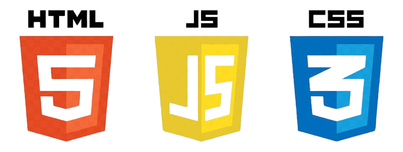

Веброзробка — це процес створення сайтів і вебзастосунків, що включає роботу з фронтендом (інтерфейсом) і бекендом (серверною частиною). Основні технології для розробки інтерфейсу — це HTML, CSS і JavaScript.
Основні етапи створення сайту на HTML і CSS:
Структура (HTML) – створюється каркас сторінки за допомогою тегів (header, main, footer, div, p, img тощо).
Стилізація (CSS) – оформлення елементів: кольори, шрифти, розміщення, адаптивність (flexbox, grid).
Додавання інтерактивності (опціонально, JS) – створення анімацій, обробка кліків, динамічний контент.
Хостинг і домен – завантаження сайту на сервер, наприклад, через GitHub Pages або Netlify.
Простий приклад сайту:
